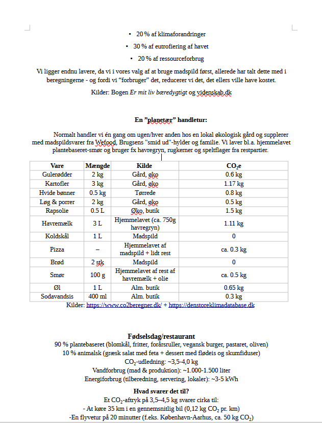
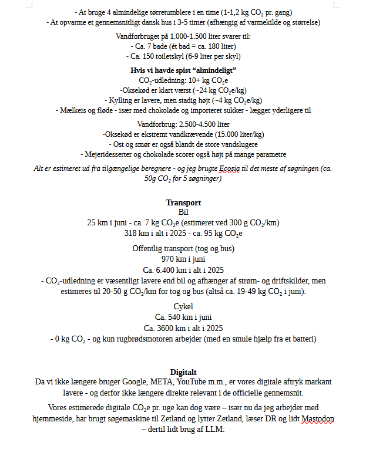
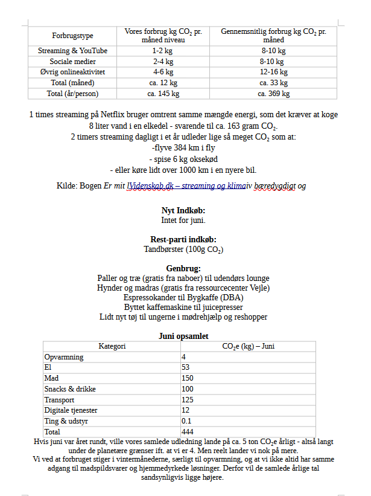
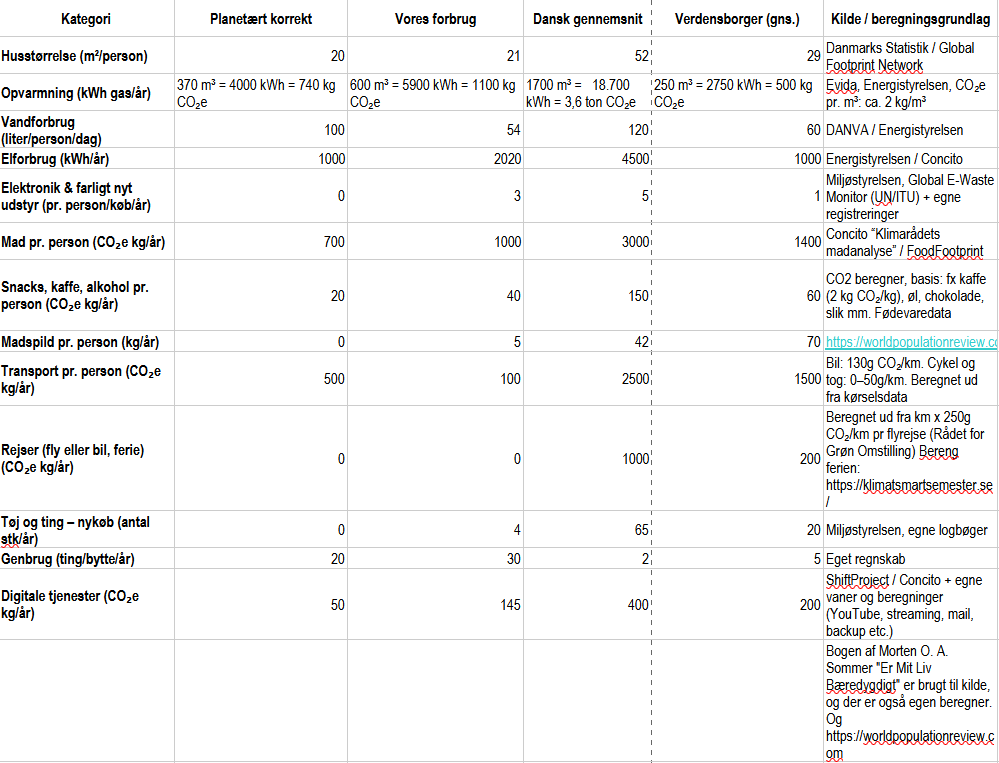

Forstå de planetære grænser og find balance mellem livsglæde og bæredygtighed.
🔍 Hvad er det sikre råderum?
Start evt. med at høre introduktionen:
Det sikre råderum betegner det miljømæssige spænd, hvor menneskelige aktiviteter kan foregå uden at underminere Jordens stabilitet og økosystemers funktion.
Begrebet er tæt knyttet til de planetære grænser – videnskabeligt definerede tærskler for bl.a. klima, biodiversitet, ferskvand og næringsstoffer.
Når vi holder os inden for disse grænser, bevares de naturlige kredsløb, der opretholder liv på Jorden. Overskrides de, øges risikoen for alvorlige og irreversible forandringer i klodens tilstand.
Det sikre råderum er dermed ikke kun et spørgsmål om miljø, men om at bevare de fundamentale betingelser for menneskelig trivsel og langsigtet samfundsstabilitet.
🌍 De 9 planetære grænser – i øjenhøjde
De planetære grænser viser, hvor meget vi kan påvirke kloden, uden at naturens systemer går i stykker.
Her er de ni områder, vi skal passe særligt på:
🌡️ Klimaforandringer: Hvor meget CO₂ og drivhusgasser vi kan udlede, uden at Jordens temperatur stiger mere end 1,5–2°C (vi er allerede over grænsen).
🌳 Biodiversitet: Hvor mange arter der kan uddø, før økosystemer kollapser. Naturlig udryddelseshastighed: 10 arter pr. million pr. år – i dag er den 100–1000 gange højere.
🌾 Næringsstofkredsløb: Hvor meget kvælstof og fosfor vi kan bruge i landbruget, uden at søer, floder og kystområder bliver livløse (grænsen er overskredet).
💧 Ferskvand: Hvor meget grundvand og overfladevand vi kan bruge, uden at tømme naturens reserver eller ødelægge vandløb (vi nærmer os grænsen).
🌿 Arealanvendelse: Hvor meget skov, græsland og vådområder vi kan omdanne til landbrug og byer, uden at miste naturens balance (grænsen er næsten nået).
🧪 Kemisk forurening: Hvor mange syntetiske stoffer (plast, pesticider, tungmetaller) vi kan sprede, uden at skade mennesker og natur (grænsen er ukendt, men vi ser allerede skader).
🌎 Atmosfærisk partikelbelastning: Hvor mange partikler (fx fra trafik og industri) der kan være i luften, uden at det skader vores sundhed og klima (lokalt overskredet mange steder).
🌊 Havets forsuring: Hvor meget CO₂ havet kan optage, før koralrev og skaldyr ikke kan overleve (pH-værdien er faldet fra 8,2 til 8,1 – grænsen er tæt på).
☀️ Stratosfærisk ozon: Hvor meget ozonlaget må tyndes ud, før vi mister beskyttelsen mod skadelig UV-stråling (heldigvis er denne grænse på vej til at blive genoprettet!).
Flere af grænserne er allerede overskredet – men vi kan stadig handle 💚 og hver handling tæller!
🛡️ Det sikre råderum – vores handlingsrum
Det er det område, hvor vi mennesker kan trives uden at ødelægge naturens evne til at opretholde liv. Forestil dig det som en konto, hvor vi ikke må overtrække – ellers risikerer vi, at systemerne bryder sammen.
For hver planetær grænse har forskere beregnet en tærskelværdi. Når vi krydser den, stiger risikoen for:
🔥 Irreversible skader (fx smeltende iskapper, der ikke kan gendannes).
⚠️ Kaskadeeffekter (én kollapsede grænse kan trække andre med – fx tab af biodiversitet, der forværrer klimaforandringer).
🌍 Uretfærdige konsekvenser (de svageste rammes først, selvom de sjældent har bidraget mest til problemet).
💡 Det gode nyhed: Vi kender grænserne – og vi ved, hvad der virker! Eksempler på, hvordan vi kan hjælpe med at holde os i det sikre råderum:
🌱 Mad: Spis mindre kød og mere lokalt – det reducerer belastningen af klima, arealanvendelse og biogeokemiske strømme.
🚲 Transport: Cykel, tog eller samkørsel mindsker luftforurening og CO₂-udledning.
♻️ Forbrug: Undgå plast og kemikalier – det beskytter havene og reducerer kemisk forurening.
💧 Vand: Spar på vandet og undgå pesticider – det bevarer ferskvand og biodiversitet.
💬 Husk: Det sikre råderum er ikke en dom – det er en invitation til at handle. Selv små skridt tæller, når vi gør dem sammen. Hvilken grænse vil du bidrage til at beskytte i dag? 🌱
👣 Hvad betyder det, når én person lever planetarisk?
Det kan virke småt – men når ét menneske vælger at leve indenfor det sikre råderum, gør det en reel forskel for kloden.
Mindsket CO₂-udledning hjælper med at stabilisere klimaet. Når du beskytter biodiversitet, får flere arter lov at overleve. Når du skåner vand, jord og luft, får naturen plads til at hele.
Det handler ikke kun om dig. Det handler om det aftryk, du sætter – og det rum, du giver andre: børn, dyr, fremtidige generationer. Hver handling tæller. Især når den bliver efterfulgt af én mere 🌱
Sammenligningstabeller
Vores Forbrug – Juni 1

Vores Forbrug – Juni 2

Vores Forbrug – Juni 3

Vores Forbrug – Juni 4

Sammenlign vores forbrug med – Planetært, dansk gennemsnit og globalt gennemsnit
“Det sikre råderum er ikke en begrænsning – det er en invitation.
En ramme, hvor både mennesker og natur kan trives.”
💡 Hvad kan jeg gøre?
Du behøver ikke gøre alt på én gang. Det vigtigste er at begynde – og at mærke, at du faktisk kan gøre en forskel.
Start med én ting i dag:
🥦 Lav et måltid af det, du allerede har
🧺 Del eller reparér noget i stedet for at købe nyt
🚿 Brug lidt mindre vand – og lidt mere omtanke
🪴 Sæt dig i haven, på altanen eller i skoven og bare... lyt